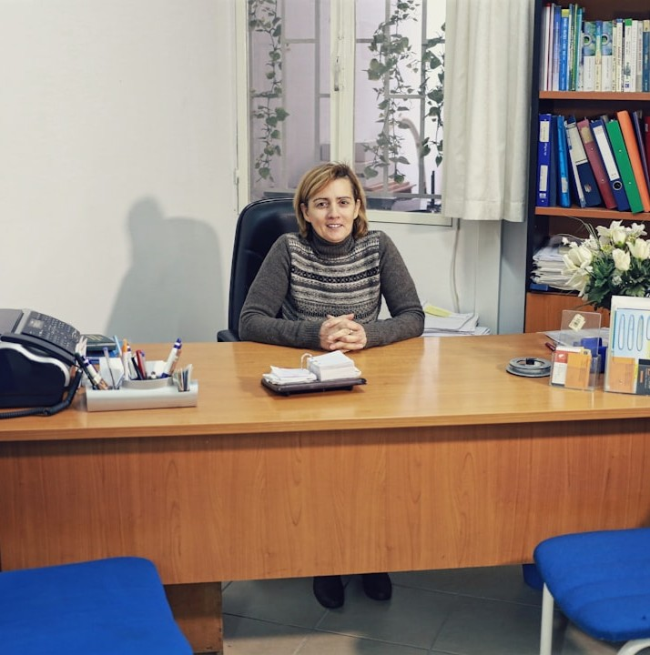

Maria Dinoir
Terapeuta Emocional
Especialista em Terapia de Reprocesso Generativo.
Cuidando da sua saúde mental com acolhimento, ética e profissionalismo.

Sobre a Profissional
Sou terapeuta especializada em Terapia de Reprocesso Generativo, uma abordagem inovadora que trabalha com o reprocessamento profundo de experiências emocionais.
Com mais de 3 anos de experiência, atendo adolescentes, adultos e idosos em processos terapêuticos que visam o autoconhecimento, desenvolvimento pessoal e tratamento de questões emocionais complexas, incluindo traumas.
Acredito em uma abordagem acolhedora e transformadora, onde cada pessoa é única e merece um atendimento personalizado, ético e respeitoso.
3+
Anos de Experiência
Áreas de Atendimento
Atendimento especializado em diversas áreas da psicologia clínica
Ansiedade e Estresse
Tratamento especializado para transtornos de ansiedade, síndrome do pânico e estresse crônico.
Depressão
Acompanhamento para superar a depressão e recuperar a qualidade de vida.
Traumas
Reprocessamento de traumas emocionais através de técnicas especializadas.
Autoestima
Desenvolvimento pessoal focado em autoconhecimento e confiança.
Como Funciona
Agendar sua consulta é simples e rápido
1. Agende sua Consulta
Escolha o melhor dia e horário em nossa agenda online.
2. Confirmação
Receba a confirmação por email e WhatsApp com todas as informações.
3. Atendimento
Realize sua sessão presencial ou online com total privacidade.
Experiências dos Pacientes
Veja o que alguns pacientes compartilham sobre suas jornadas terapêuticas
Paciente da Maria Dinoir? Compartilhe sua experiência!